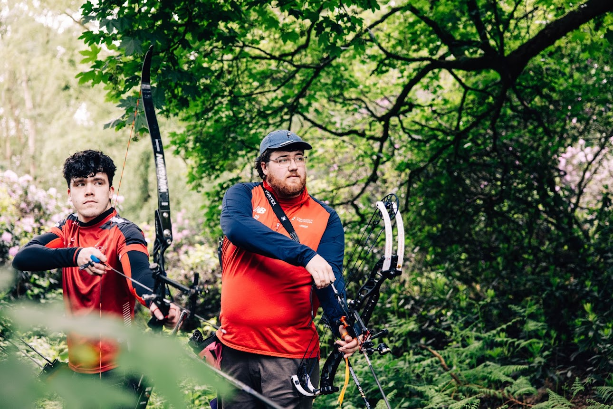

Contact us
Your committee
The toucan committee consits of a League Organiser, Division 1 Organiser, Division 2 Organiser, Rules and Records Officer, and Social Media Officer.
Here are your 26/27 committee members!
League Organiser - Becky Stacey
I oversee the organisation of the league including doing the budget and medals. If you have any questions, please get in touch!
Division 1 Organiser - Jess Wrona
I plan and organise the schedule for division 1 toucan legs and support div 1 tournament officers with any help they need for their hosting leg :)
Division 2 Organiser - Eloise Goode
I support the running of Division 2!
Rules and Records Officer - Josuf Hyseni
I'm in charge of keeping the rules of the toucan league in order and up to date, and make sure they're followed accordingly. I'm also in charge of tracking scores shot in the league, managing the records standing and when badges are claimed!!

Social Media Officer - Benjamin Pepper
I keep the instagram and website up to date to show off the amazing work our atheletes do!
How to contact the League
Your club's chair/president will be in the TOUCAN Whatsapp chat and can reach out on your behalf.
We also have a league instagram (linked at the bottom of the page) where you can message and the league social media officer will get back to you!
Our club email is thetoucanleague@gmail.com and we always keep an eye on it!